Microsoft Ignite 2026 — Foundry / Copilot Studio の変更まとめ
基準日: 2026-11-22 / 対象: Ignite 2026(2026-11-17〜20)の発表と、前回の調査(2026-10-14)以降に Learn・公式ブログへ出た Microsoft Foundry・Copilot Studio の変更 / ステータスの判定: features 調査と同じく、本番に使えるかは「公式 GA 一覧」で決める。
この資料のステータス表記
| 表記 | 意味 |
|---|---|
| GA | 一般提供。公式 GA 一覧でも GA、またはモデル・ツールの公式ページで GA |
| Preview | プレビュー(SLA なし。本番の必須経路に置かない) |
| 限定プレビュー | 申請制・招待制のプレビュー |
| 予定 / Frontier | 提供予定 / Microsoft の Frontier プログラム参加者向けの先行提供 |
| GA(発表) Preview(公式 GA 一覧) | 発表とドキュメントが食い違う。 ブログ・Book of News などの発表では GA だが、公式 GA 一覧では Preview。カッコ内が出典 |
| GA(発表) 記載なし(公式 GA 一覧) | 発表では GA だが、公式 GA 一覧にその機能の行がない |
| GA Preview(一部) | 機能の一部だけが Preview。 どの部分かを同じ行に書く |
実測は、2026-11-22 に Japan East の Azure で実際に組んで確かめた結果を指す(5 章)。
公式 GA 一覧は、Microsoft Learn の「Feature readiness at GA」にある表(Foundry ポータルの機能ごとに GA / Preview を示す。2026-11-17 更新)を指す。Microsoft が本番利用の可否を機能単位で示している唯一の一覧なので、これを正とする。
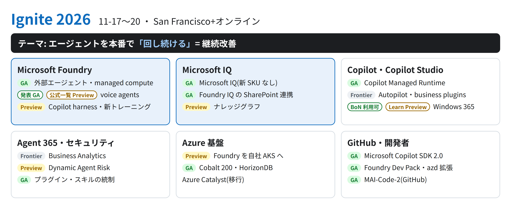
Ignite 2026 の軸は「エージェントを本番で回し続ける」継続改善だった。Foundry では観測・評価・最適化・再学習が 1 本のループになり、GA と新プレビューが同時に大量に出た。ただし公式 GA 一覧に反映された GA は一部だけで、発表の GA をそのまま本番採用の根拠にしないことが今回いちばんの注意点だ。
1. Ignite 2026 の概要
| 項目 | 内容 |
|---|---|
| 開催 | 2026-11-17〜20、San Francisco+オンライン |
| テーマ | AI エージェントの本番運用と継続改善。Microsoft IQ(企業の文脈を束ねる層)を GA にし、Foundry が改善ループを担う |
| 主な柱 | Microsoft Foundry / Microsoft IQ / Microsoft Copilot・Copilot Studio・Agent 365 / Azure 基盤 / セキュリティ / GitHub |
| 一次情報 | Book of News、Azure ブログ「Continuous improvement comes to Microsoft Foundry」、devblogs Foundry、Tech Community Foundry Blog |
2. Foundry: 何が変わったか
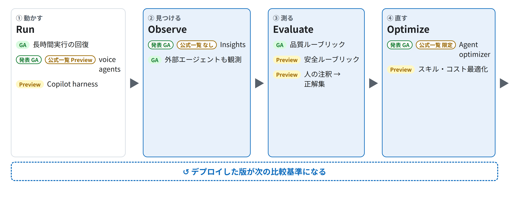
- 本番のトレースから問題を束ね(Insights)、ルーブリックと人の注釈で測り、Agent optimizer が改善案を出し、それでも足りなければモデルを再学習する。この改善の手順が製品の機能として並んだ。
- 同じ基準で版を比べ続けるのが前提なので、評価データセット(正解集)を誰が持つかを最初に決める必要がある。
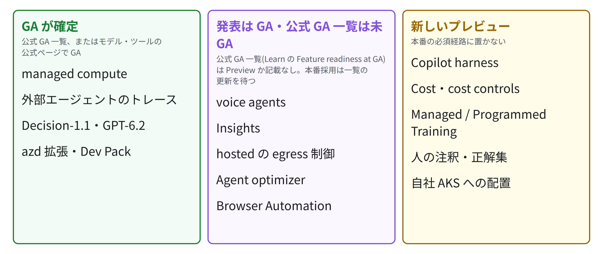
- 本番の必須経路に載せてよいのは左の列だけ。中央の列は、公式 GA 一覧が更新されれば GA になる候補として扱う。
3. Foundry: 領域別の詳細
3.1 エージェントの動かし方(Agent Service)
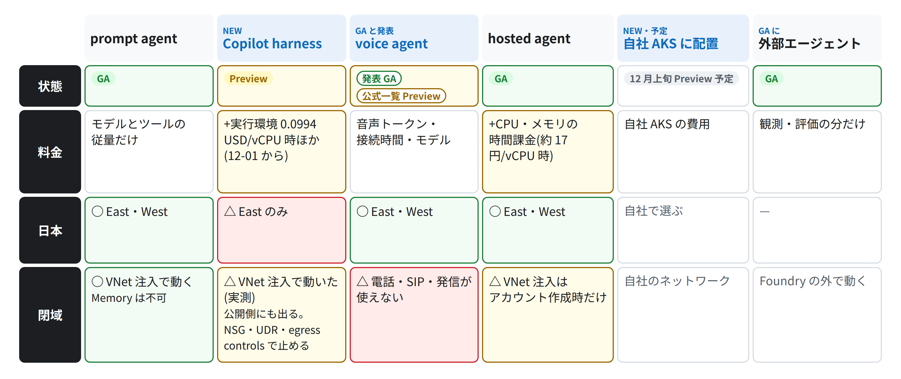
- 新しい選択肢の条件: Copilot harness は 12-01 から実行環境(vCPU・メモリの時間)に課金が加わり、日本では Japan East だけで使える。閉域のプロジェクトでも動き、shell から公開インターネットにも出られた。止めるには、委任サブネットの NSG・UDR か RAI ポリシーの egress controls(Preview)を使う(5.4 の実測)。voice agent は日本の両リージョンで使えるが、閉域のプロジェクトでは電話番号チャネル・SIP・発信が使えない。hosted agent は CPU とメモリの時間課金が加わり、VNet に入れられるのはアカウントを作るときだけ。
- 料金の単価は 2026-11-22 時点の公開値。地域や契約で変わるので、見積もりでは料金ページで確かめる。
画面: Microsoft Learn「voice-agent-observability」 — voice agent の Monitor タブ。タブ列に Channels(電話などのチャネル)がある(画面はイベント前の 2026-11-11 版)
| 発表 | ステータス | SI に効く点 | 出典 |
|---|---|---|---|
| voice agents | GA(発表・Learn・SDK) Preview(公式 GA 一覧) Preview(一部) | 公式 GA 一覧の行名は「Agents — Voice Live」。電話系(SIP・発信)・WebRTC・監視と評価は Preview。閉域プロジェクトでは電話チャネルと発信が使えない | devblogs 11-18 |
| Microsoft Copilot harness(prompt agent のマネージド実行) | プレビュー | 2026-12-01 から従量課金(0.0994 USD / vCPU 時・0.0118 USD / GiB 時。料金は地域・契約で変わり、Learn には未掲載)。Japan West・East US 2 不可、BYOM・Memory 不可 | devblogs 10-28 |
| hosted agents: 長時間実行の回復・サブネット IP 共有 | GA | サブネットは /24 で約 60,000 セッションの計画値(上限はセッションクォータ 2,000 / 1,000) | devblogs 11-18 |
| hosted agents: egress 制御 | GA(発表・Learn) 記載なし(公式 GA 一覧) | 公式 GA 一覧で近い行「Guardrails — Agents」は Preview。安定版 API 2026-09-01。Transform rules・シークレット注入は Preview | Learn add-hosted-agent-guardrails |
| hosted agents: memory snapshot・社内 CA の信頼・Azure Policy による egress 統制 | プレビュー | Policy 統制は Canada Central / Spain Central / Korea Central のみ(日本なし) | 同上 |
| 自社 AKS への配置 | 予定(public preview は 12 月上旬が目標) | GPU・リージョン・統制を自社で選べる。本番採用はまだ先 | 同上 |
| M365 / Teams への公開 | GA(Bot Service リソースが不要に) | 別途の Azure Bot Service を作らずに公開できる。受信は公衆インターネット経由で、パブリックネットワークアクセスが無効ならポータルは使えず REST だけ | Learn publish-copilot |
| ビジュアル Workflows | プレビューのまま 2026-12-01 廃止 | Microsoft Agent Framework へ移行 | Learn workflow |
3.2 観測・評価・最適化
画面: Microsoft Learn「agent-insights」 — Insights タブ。繰り返し起きる問題を束ね、関連トレースと修正案を示す(画面はイベント前の 2026-11-10 版で Preview 表記がある)
画面: Microsoft Learn「register-external-agent」 — Foundry の外で動くエージェントを「Link external agent」で登録する(画面はイベント前の 2026-11-11 版)
画面: Microsoft Learn「trace-annotations」 — トレースに Good / Bad とコメントを付ける注釈画面(画面はイベント前の 2026-09-30 版)
画面: Microsoft Learn「optimize-agents-from-insights」 — Insights を基にした最適化の結果。候補ごとに品質とレイテンシを比べる(画面はイベント前の 2026-11-11 版)
| 発表 | ステータス | SI に効く点 | 出典 |
|---|---|---|---|
| Insights(繰り返す失敗の分析) | GA(発表・SDK 2.11.0) 記載なし(公式 GA 一覧) | Japan East / West で使える。分析に使うモデルの料金と閲覧ロールが要り、voice agents では使えない。SDK は beta から GA への移行で破壊的変更 | Learn agent-insights |
| 外部エージェントの登録・観測(LangGraph / LangChain / CrewAI) | GA(トレースは公式 GA 一覧でも GA) | Insights の修正案は一般的な助言だけ(Foundry がコードを持たないため)。人手評価・red teaming の対象化・イベント起動の継続評価は非対応。旧カスタムエージェントは 2027-05-07 終了 | TC 11-18 |
| 品質ルーブリック | GA(Learn が明記。評価器一覧の見出しは preview のまま) | 業務の「良い回答」の基準を項目で書ける | Learn continuous-scheduled-evaluation |
| 安全・タスク単位のルーブリック | プレビュー | 安全ルーブリックは日本リージョンなし | Learn safety-rubric |
| Human in the loop(トレース注釈 → 評価データセット → 正解集) | プレビュー | 注釈を付ける人と正解集の持ち主を体制に入れる | Learn human-in-the-loop |
| Agent optimizer(Insights 連携・スキル最適化・コスト最適化) | GA(Book of News) 限定プレビュー(公式 GA 一覧)。Insights 連携・スキル最適化・コスト最適化は Preview | 改善案は評価で比べてから採用する流れ。2026-11-22 の実測では申請なしで使えた(5.8) | Azure ブログ 11-17 |
| 決定モデルを評価の判定役に | プレビュー | Learn は Decision-1 のみ対応(ブログは 1.1 も可と書く)。Decision-1 は 2027-02-04 リタイア | Learn decision-model-judge |
3.3 モデル
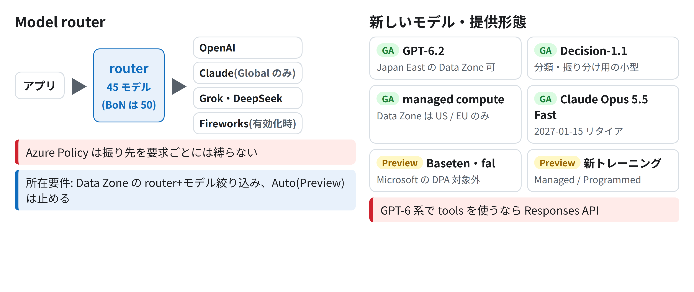
| 発表 | ステータス | SI に効く点 | 出典 |
|---|---|---|---|
| GPT-6.2 astra / sol、gpt-6.1-terra | GA | APAC Data Zone(Japan East)に対応。GPT-6 系で tools を使うなら Responses API(Chat Completions には制約)。GPT-6.2 は 2026-11-01 以降に提供開始したモデルなので Modified Abuse Monitoring の対象外になる(日付は 30 日前以上に通知) | Learn reasoning |
| Microsoft-Decision-1.1(分類・振り分け用の小型) | GA | APAC Data Zone(Japan East / West)で使える | TC 11-18 |
| Model router の大改訂(Learn は 45 モデル・Book of News は上位 50、Responses ネイティブ、AI Gateway 連携) | GA(router 本体は version 2025-11-18。Auto・Messages API・要求ごとの制御・自動モデル選択は プレビュー) | Azure Policy は要求ごとの振り先を縛らない。router 経由の Claude は Global のみ。所在要件があるなら Data Zone の router とモデルの絞り込み | Learn model-router-faq |
| managed compute(オープンモデルの専用配置) | GA(公式 GA 一覧でもプレビューの注記が消えた) | Data Zone は US / EU のみで APAC なし | devblogs 11-20 |
| Baseten on Foundry・fal の動画モデル | プレビュー | Microsoft の Product Terms・DPA の対象外(Fireworks は対象) | Book of News |
| Managed Training / Programmed Training | プレビュー | 旧 managed fine-tuning / interactive training の改称 | TC 11-18 |
| MAI-Code-2-Flash | 限定プレビュー(Foundry。GitHub では MAI-Code-2 が GA) | Foundry での本番利用はまだ | Book of News |
| GPT-5.6 以降のプロンプトキャッシュ | GA(課金の変更) | キャッシュの書き込みが課金対象に(12 時間保持の書き込みは 2026-11-01 の利用分から) | Learn prompt-caching |
3.4 ナレッジ・ツール
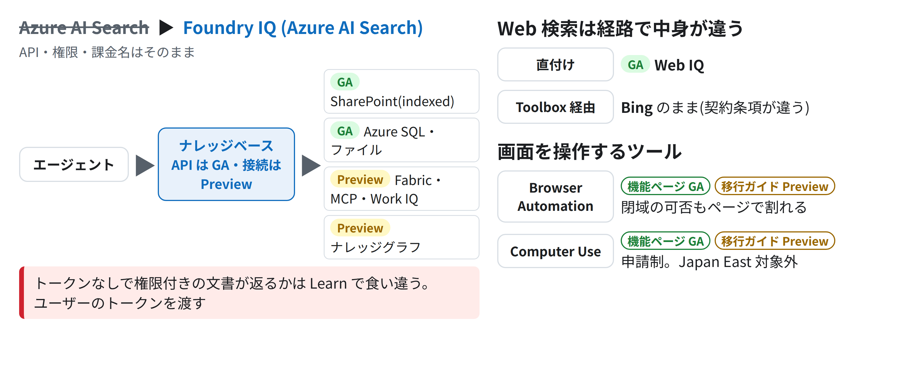
画面: Microsoft Learn「monitor-toolbox」 — Toolbox の Monitor タブ。呼び出し数・成功率・エージェント別の利用(画面はイベント前の 2026-11-03 版)
| 発表 | ステータス | SI に効く点 | 出典 |
|---|---|---|---|
| Azure AI Search → Foundry IQ (Azure AI Search) | GA(名称の変更) | リソース種別・エンドポイント・API 版・RBAC・課金名は変わらない | Learn search whats-new |
| ナレッジベースの計画・回答合成、SharePoint(indexed)・Azure SQL・ファイルのソース | GA Preview(一部) | API 2026-10-01 で GA。エージェントからの接続(RemoteTool)は Preview。ユーザーのトークンなしで呼んだときに権限付きの文書が返るかは、Learn のページで食い違う(下の節) |
Learn foundry-iq-connect |
| マネージド Foundry IQ(プロジェクトに内蔵) | 限定プレビュー(12 月に全プロジェクトへ展開予定) | 課金とリージョンの条件は要確認 | TC 11-18 |
| ナレッジグラフ・Microsoft-Retriever-1 | プレビュー | — | Book of News |
| Web 検索(Web IQ) | GA(prompt agent に直付け) | Toolbox 経由は Grounding with Bing のままで、データ境界・DPA の条項が経路で違う | Learn web-search |
| Browser Automation・Computer Use | GA(Learn の機能ページ) Preview(Learn の移行ガイドの表) 記載なし(公式 GA 一覧) | Browser Automation の閉域可否はページで割れる。Computer Use は申請制で、Japan East は対象外(Japan West は可) | devblogs 11-18 |
| Toolbox の Monitor・VS Code 連携 | 記載なし(ステータス表記なし) | 呼び出し数・成功率・エラーをエージェント別に見られる | Learn monitor-toolbox |
エージェントにつなぐ RAG: Foundry IQ を選ぶ条件
「汎用の RAG なら Foundry IQ」とは言えない。エージェントにつなぐ 4 つの方法を同じ観点で比べると、向く条件が分かれる(2026-11-22 時点の公式ドキュメントによる。実測はしていない)。
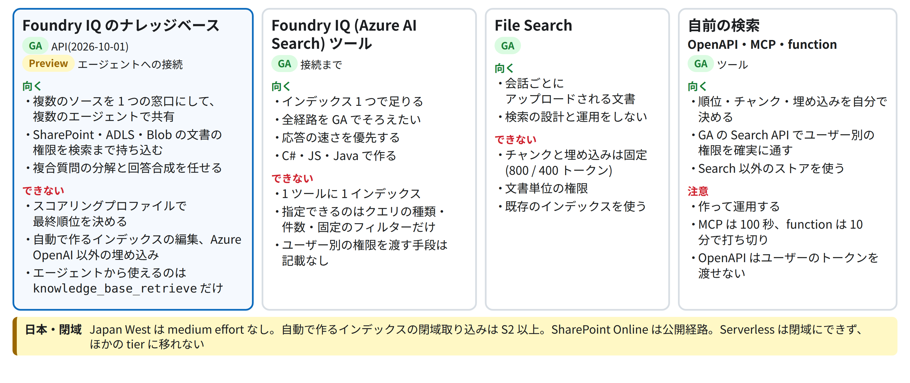
- API の GA は広がったが、エージェントからつなぐ部分には Preview が残る。 Search の安定版 API 2026-10-01 で、LLM によるクエリ計画・回答合成・reasoning effort(minimal / low / medium)と、7 種のナレッジソース(検索インデックス・Blob / ADLS・OneLake・Web・ファイル・Azure SQL・SharePoint(indexed))が GA になった。一方、Agent Service からナレッジベースにつなぐ接続(
RemoteTool)は Preview で、手順の例も Preview 版の MCP(2026-11-01-preview)を使う。GA 版(2026-04-01)の MCP は常に minimal で、抽出した結果だけを返す。公式 GA 一覧の扱いも「Partial GA(API は GA、ポータルは Preview)」のまま。Ignite で増えた Microsoft Retriever 1・ナレッジグラフ・GPT-6 系のモデルは Preview 版の API にしかない。 - 検索はある程度まで調整できるが、最終順位と前処理は Foundry IQ に任せる。 調整できるのは、既存のインデックスを包む(セマンティック構成が必須)、保存フィルターとリクエスト時のフィルター、検索と回答への指示(
retrievalInstructions・answerInstructions)、件数・時間・出力トークンの上限、minimal にして LLM の計画を省く、の範囲。スコアリングプロファイルは候補の選び方に効くだけで、最終順位は決められない。Blob・OneLake・SharePoint から自動で作るインデックスは固定のテンプレートで、埋め込みは Azure OpenAI に限られる。エージェントから使えるツールはknowledge_base_retrieveだけで、Agent Service は MCP の呼び出しを 100 秒で打ち切る。 - ユーザーのトークンを渡さないときの動きが、Learn のページで食い違う。 foundry-iq-connect(11-09)は「権限付きのソースもフィルターせずに返す」と書き、retrieve とクエリ時の ACL のページ(11-06・11-09)は「ACL 付きの文書は返さない」と書く。どちらの動きでも困らないよう、ユーザーのトークンを渡す設計にし、受入試験で確かめる。
- 日本と閉域では、次の条件がつく。 Japan West では medium effort と可用性ゾーンが使えない。自動で作るインデックスを閉域で取り込むには Search を S2 / S3 / L1 / L2 にし、取り込み時の埋め込みは trusted-service bypass に頼る。SharePoint Online への通信は常に公開経路を通る。Serverless は閉域の取り込みに対応せず、ほかの tier にも移れないので、PoC を Serverless で作ると本番の閉域で作り直しになる。
- 費用は 3 つ重なる。 Search の tier 料金に、agentic retrieval のトークン(free プランは使い切ると 402 を返す)と、計画・回答合成に使う Azure OpenAI のトークンが加わる。
Azure AI Search の改称は表示名だけ
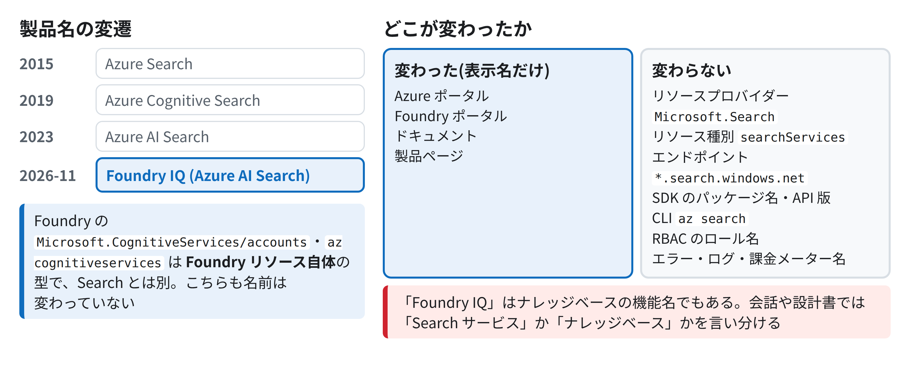
- 変わったのは Azure ポータル・Foundry ポータル・ドキュメント・製品ページの表示名だけで、Learn は「コードやアプリの変更は不要」と書く。リソースプロバイダー(
Microsoft.Search)・エンドポイント・SDK のパッケージ名と API 版・RBAC のロール名・エラーとログ・課金メーター名は旧名のまま残る。手元の Azure CLI 2.93 でもaz searchのヘルプは「Manage Azure AI Search」のままだった。 - Foundry 側に残る「cognitive」の名前(
Microsoft.CognitiveServices/accounts、az cognitiveservices)は Foundry リソース自体の型で、Search の改称とは関係がない。 - 「Foundry IQ」はナレッジベース(エージェント向けの検索の仕組み)の機能名としても使われてきた。設計書では「Search サービス」と「ナレッジベース」を言い分ける。
公式ドキュメントに画面画像がない機能: Copilot harness の prompt agent、Foundry IQ(マネージド・SharePoint)、Browser Automation。Browser Automation と Foundry IQ の接続は上の図、Copilot harness は 3.1 の図で示している。
3.5 管理・コスト
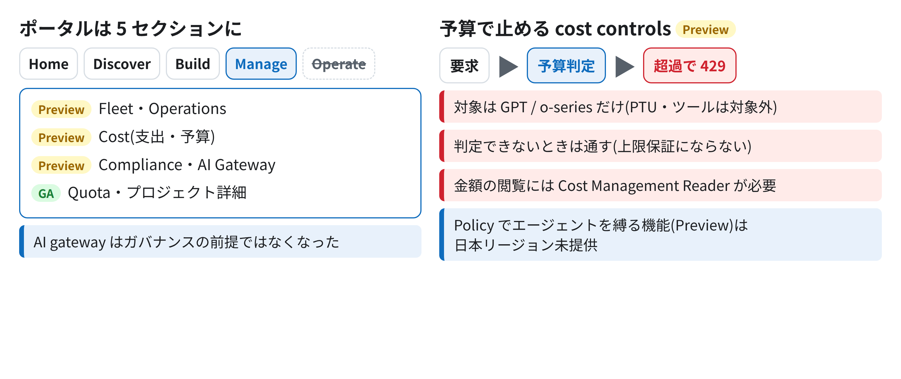
画面: Microsoft Learn「monitor-fleet」 — Manage の Fleet overview。左ナビに Fleet・Cost・Operations・Compliance・Quota・Gateways(2026-11-18 版。上部ナビに Operate が残る統合前の画面)
画面: Microsoft Learn「view-project-costs」 — プロジェクトの「Cost by agent」。エージェントごとの推定トークンコスト
画面: Microsoft Learn「create-cost-controls」 — 「Create cost control」。予算・対象・エージェント単位の配分を決める
| 発表 | ステータス | SI に効く点 | 出典 |
|---|---|---|---|
| Operate を Manage に統合(Fleet / Cost / Operations / Compliance) | プレビュー(Quota・プロジェクト詳細は GA) | ポータルは Home / Discover / Build / Manage / Docs の 5 セクション。手順書の画面説明を直す | Feature readiness at GA |
| Cost in Foundry・cost controls | プレビュー | 超過で HTTP 429。対象は GPT / o-series だけ(PTU・ツール料金・hosted の実行基盤は数えない)、判定できないと通す。金額の閲覧には Cost Management Reader が別に要る | Learn cost-controls |
| Foundry governance(旧コントロールプレーン) | 名称の変更 | AI gateway がガバナンスの前提ではなくなった | Learn control-plane overview |
| Azure Policy でエージェント種別・コンテナイメージ・egress を縛る | プレビュー | Canada Central / Spain Central / Korea Central のみ(日本なし) | Learn agent-deployment-policy |
| Azure AI Gateway(新しいリソース種別) | GA(Learn・Tech Community) Preview(公式 GA 一覧) | Foundry の画面から APIM を新しく紐付けることはできなくなった | Learn AI gateway |
3.6 開発者ツール
| 発表 | ステータス | SI に効く点 | 出典 |
|---|---|---|---|
azd の Foundry 拡張(microsoft.foundry 1.0 ほか) |
GA(2026-11-05) | CI/CD の標準は azd。az cognitiveservices agent は非推奨で、2027-02-28 後の最初の CLI リリースで削除 |
Azure/azure-dev releases |
| Foundry Dev Pack | GA(2026-11-18) | チームの開発環境をワンコマンドでそろえられる | devblogs 11-18 |
SDK(azure-ai-projects 2.11.0、.NET 3.0.0) |
GA | Voice Agents・Insights・External Agents が SDK 上 GA | PyPI |
| Microsoft Agent Framework | GA(1.26) | azure-ai-projects の上限は解消。Python 3.11 以上・MCP SDK 2.x が必須に |
Learn MAF |
4. Copilot Studio 関連
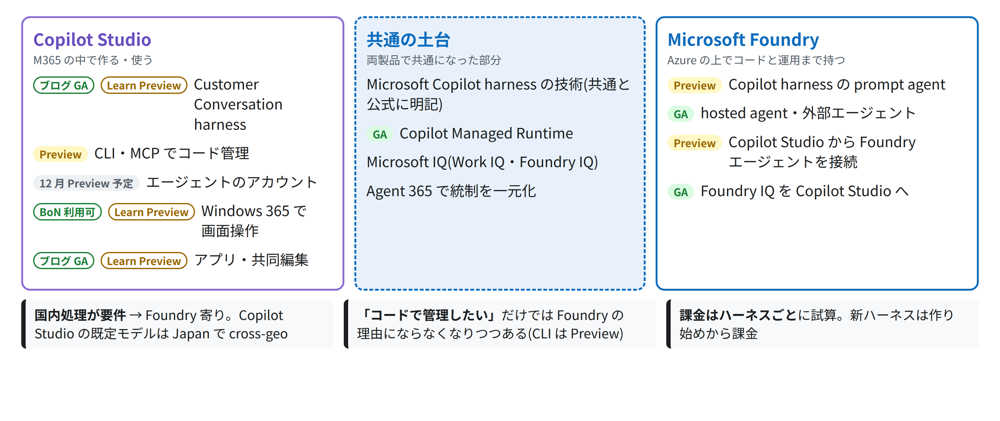
- Copilot Studio の新機能は Book of News にほとんど載らず、主な一次情報は Copilot Studio ブログの Ignite 記事(2026-11-18)だった。Learn の What's new は 10 月分までで、Ignite の項はまだない(2026-11-22 時点)。
- 発表と Learn が食い違う機能が多い点は Foundry と同じで、ブログが GA と書いても Learn や目次は Preview のままのものが多い。
- Foundry との関係で一番大きいのは、Microsoft Copilot harness の技術が両製品で共通だと公式に書かれたこと(Official Microsoft Blog 2026-10-28。devblogs も「shared execution foundation」と書く)。製品としてのステータス・課金・機能は別で、エージェント定義を移せるかは書かれていない。
画面: Microsoft Learn「agents-experience/overview」 — 新しいハーネス(Microsoft Copilot harness)の Build タブ。右側に Model・Microsoft IQ・Skills・Tools・Knowledge・Connected agents・Memory が並ぶ(2026-11-17 版)
画面: Microsoft Learn「authoring-add-event-trigger」 — イベントで自律実行するトリガー(メール受信・ファイル更新・定期実行など)(画面はイベント前の 2026-11-12 版)
画面: Microsoft Learn「authoring-agent-account」 — エージェントに専用のアカウントを持たせる「+ Agent account」(画面はイベント前の 2026-10-15 版)
| 発表 | ステータス(出典の表現) | SI に効く点 | 出典 |
|---|---|---|---|
| Copilot Managed Runtime(Copilot Code・Cowork・Copilot Studio のアプリを動かす実行基盤) | GA | Copilot Studio のエージェントとワークフローをローカルで作り、CLI で publish する機能は public preview | TC 11-17 |
| Customer Conversation harness(コンタクトセンター向け) | GA(ブログ 11-18) Preview(Learn What's new 10 月) | 対応地域に Japan がない。connected agent は Foundry だけ | Copilot Studio ブログ 11-18 |
| Microsoft Copilot harness(旧 GitHub Copilot harness) | Production-ready preview(Ignite での GA 表明なし) | 1 ターン 200 ツール呼び出し・90 分。外部エージェントの呼び出しは 5 分で切れる。トークン・ツール・ハーネスに Copilot Credits が作り始めからかかる | Learn What's new |
CLI(msagent)と Copilot Studio MCP |
プレビュー | Git でのソース管理やコード開発ができるようになりつつあるが、本番の ALM の根拠にはまだできない | Copilot Studio ブログ 11-18 |
| エージェントのアカウント | 予定(ブログ 11-18 = 12 月に Preview) Frontier(Learn) | 常駐する自律エージェントに M365 の ID を持たせる | Learn authoring-agent-account |
| Windows 365 for Agents(computer use) | GA(Book of News = standard harness で利用可) Preview(Learn の Cloud PC pool)。新ハーネスは 12 月に Preview、Foundry は 2027 年初めに Preview の予定 | API のない業務アプリの画面操作は、当面 Copilot Studio のほうが早く組める。Copilot Credits の対象に | Book of News |
| エージェントの共有・Apps in Copilot Studio | GA(ブログ 11-18) Preview(Learn のクイックスタート)。Learn の共有ページは閲覧権限しか渡せないと書く | 複数の作成者での共同編集 | Copilot Studio ブログ 11-18 |
| Foundry エージェントの接続 | standard harness = プレビュー / 新ハーネス = 表記なし(GA の明記もなし) | Foundry 側のエンドポイント設定には V1Preview ヘッダーが要る |
Learn add-agent-foundry-agent(2026-11-18 更新) |
| Foundry IQ の接続 | GA(Copilot Studio ブログ 10-07) | 新ハーネスのエージェントだけで、1 エージェント 1 接続。Azure AI Search を使っていた構成は Foundry IQ に移す | Learn foundry-iq-connect |
Copilot Studio と Foundry の使い分けで変わった点
| 観点 | Ignite 以降に確認できたこと | 使い分けへの影響 |
|---|---|---|
| 国内処理 | standard harness の既定モデル(GPT Chat Latest)は Japan で「Default (cross-geo)」(11-19 版。What's new とは食い違う) | 国内処理が要件なら Foundry に寄せる根拠が強まった |
| コードでの開発・運用 | CLI・Copilot Studio MCP・ローカル開発(いずれも preview)、Managed Runtime 上の Code Agents(early access) | 「コードで管理したい」だけでは Foundry を選ぶ理由にならなくなりつつある。Code Agents と Foundry の hosted agent の使い分けは書かれていない |
| 課金の比べ方 | 新ハーネスは作り始めから Copilot Credits。M365 Copilot ライセンス保有者の扱いは新ハーネスの課金ページに記載なし | 試算の前に「どのハーネスで作るか」を決める |
| 規模の上限 | 新ハーネスは 1 ターン 200 ツール呼び出し・90 分。委任は 1 段、外部エージェントは 5 分 | 「アクション数が多いから Foundry」は standard harness だけの基準になった |
| 統制と費用 | Agent 365・Defender・Entra Agent ID に両製品のエージェントが並ぶ。費用は Copilot Credits と Foundry の Cost(preview)に分かれたまま | 「統制は Agent 365 で一元化、費用は製品ごと」と説明する |
画面は Microsoft Learn の掲載ページへのリンクで示す(画像はこのリポジトリに転載していない)。Foundry エージェントの接続・Foundry IQ の接続のページには画面画像がない。
5. 閉域と権限制御
Foundry を導入する企業の多くは閉域を求める。この章では公式ドキュメントの記述と、2026-11-22 に Japan East の Azure で実際に組んで確かめた結果(図の「実測」)を分けて示す。検証の手順・生ログ・費用の内訳は labs/foundry-probes の probe 12〜15 にある。検証に使ったリソースはすべて削除した。
5.1 閉域の構成パターン
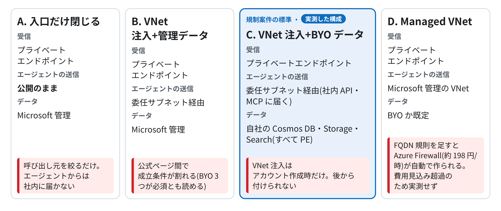
- 規制のある案件では C(VNet 注入+自社のデータ資源)が標準になる。VNet 注入はアカウントを作るときにしか付けられないので、PoC の段階から C で作る。
- 自社のデータ資源のうち Cosmos DB は Serverless で足りた(実測)。検証環境の常時課金を減らせる。
- D(Managed VNet)は、送信先の FQDN 規則を足すと Azure Firewall が自動で作られ、約 198 円/時かかり続ける。今回は費用見込み超過のため実測していない。
5.2 機能ごとの閉域対応
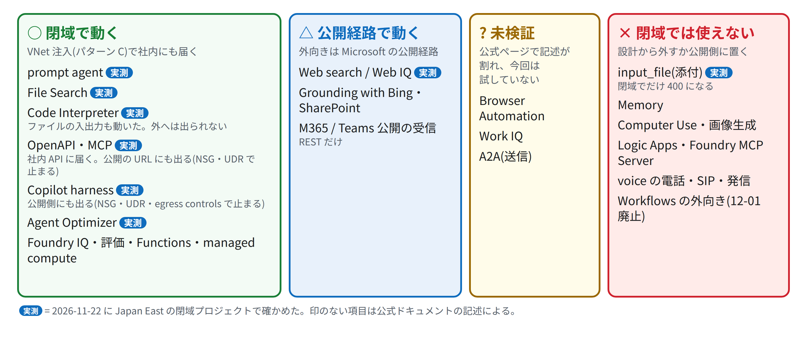
5.3 実測: 閉域プロジェクトで何が動いたか
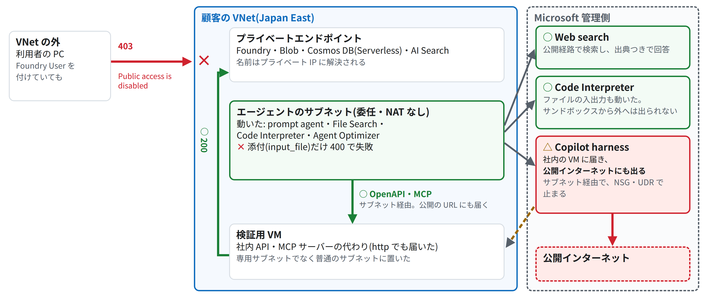
- VNet の外からは Foundry User を付けた利用者でも 403(Public access is disabled)で拒否された。VNet 内の VM からは名前がプライベート IP に解決され、200 で通った。
- エージェントのサブネットに NAT やファイアウォールがなくても、prompt agent と File Search・Code Interpreter・Web search・OpenAPI・MCP が動いた。OpenAPI と MCP の要求はエージェントのサブネットから VNet 内の VM に届き、公開の URL にも届いた(5.4)。
- Copilot harness も閉域のプロジェクトで動き、shell から VNet 内の VM にも公開インターネットにも届いた。 NAT がなくても外に出たのは OpenAPI・MCP と同じで、委任サブネットに NSG か UDR を当てると止まった(5.4)。
- 添付ファイル(
input_file)だけは、閉域のプロジェクトで誰が送っても 400 になった(公開側の同じ手順では 200)。閉域でファイルを渡すなら Code Interpreter か File Search を使う。 - 構築でつまずいた点: VNet 注入ありのアカウントでは、アカウント側の capability host が自動で作られ、IaC で作ろうとすると 400 / 409 になる。削除では、アカウントを完全に削除(purge)するまで委任サブネットのリンクが残り、リソースグループの削除が止まった(閉域側の purge に 22 分)。purge したアカウントと同じ名前で作り直すと、エージェントのエンドポイントだけが 70 分以上 403「Traffic is not from an approved private endpoint.」を返した(名前を変えると出なかった。原因は未確定)。
5.4 外向きの通信: 経路ごとの違い
Web search は検索語を Azure の境界の外(Bing)に送り、Global Standard のデプロイは国外で処理することがある。Copilot harness との違いを、宛先を誰が決めるか・何が出るか・どこを通るか・どう止めるかの 4 つの軸で比べた。2026-11-22 には閉域のプロジェクトのエージェントのサブネットに NSG と UDR を当て、どの通信が止まるかを確かめた(probe 15)。
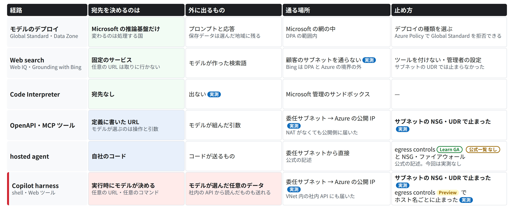
- Copilot harness の違いは、宛先と送る中身を実行時にモデルが決めること。 shell と Web ツールで任意の URL・任意のコマンドを使えるので、VNet 内の社内 API から読んだ内容を外へ送ることもできる。通る場所と止め方は OpenAPI・MCP と同じで、委任サブネットの NSG と UDR で止まり、外すと戻った。RAI ポリシーの egress controls(Preview)を付けると、Deny にしたホスト名だけが 403 になり、ほかのホストには届いた。ただし egress controls を付けると、規則に当たらない VNet 内の 8080 番と公開の 22 番への接続も拒否された(原因は切り分けていない)。社内 API を harness から呼ぶなら、付けた状態で届くかを確かめる。
- Global Standard はどの国で処理するかの話。 宛先は Microsoft の推論基盤に限られ、プロンプトと応答は Microsoft の網の中で DPA の範囲に残る。保存データは選んだ地域に残る。国内で処理するなら Standard(リージョン)を選ぶ。ただし Japan East の Standard で使えるモデルは gpt-4.1-mini・gpt-4o・埋め込みなどに限られ、Data Zone の APAC には豪州・韓国・東南アジア・インドも入る。Azure Policy で Global Standard のデプロイを拒否できる。
- Web search は宛先が固定のサービスで、出るのはモデルが作った検索語。 任意の URL を取りに行く機能はない。Bing(Grounding with Bing)は DPA の対象外で、Azure のコンプライアンス境界の外に出る。顧客のサブネットは通らない(0.0.0.0/0 → None でも動いた)。止めるのはサブネットではなく管理者の設定で、サブスクリプションの機能フラグ
OpenAI.BlockedTools.web_search、Microsoft.Bingの登録解除と Azure Policy、承認済みツールのポリシー(Preview)がある。 - OpenAPI と MCP は宛先が定義の URL に固定され、通信は顧客の委任サブネットを通る。 NAT もファイアウォールもなく、サブネットの既定の送信を切っていても、公開の URL に届いた。宛先から見た送信元は Microsoft が管理する Azure の公開 IP(AzureCloud.japaneast。呼び出しごとに変わる)だった。OpenAPI は宛先の IP だけを拒否する NSG でも、UDR(宛先の /32 → None)でも止まり、外すと戻った。MCP は 0.0.0.0/0 → None で止まった。
- hosted agent は自社のコードが宛先を決め、委任サブネットから直接出る(公式の記述。今回は実測していない)。egress controls と NSG・ファイアウォールを併せて使う。
- 送信元の公開 IP では絞れない。 harness も OpenAPI も、送信元は AzureCloud.japaneast(リージョンの Azure 全体)のタグにしか入らず、プレフィックスも互いに別だった。宛先の側で harness や Foundry のツールだけを許可することはできない。
- 閉域の要件では、NAT を置かないことを「外に出ない」根拠にしない。 委任サブネットに NSG か UDR を当て、harness を使うエージェントには egress controls でホスト名も絞る。0.0.0.0/0 → None でもツールなしの prompt agent と harness の応答は返ったので、実行基盤そのものはサブネット経由のインターネットに頼っていない。ツールの呼び出しは失敗したので、0.0.0.0/0 をファイアウォールに向けるなら、公式の許可リスト(
login.microsoftonline.comなどの Entra の宛先、または AzureActiveDirectory タグ)を入れてからツールの動作を確かめる。
5.5 権限: ロールごとにできること
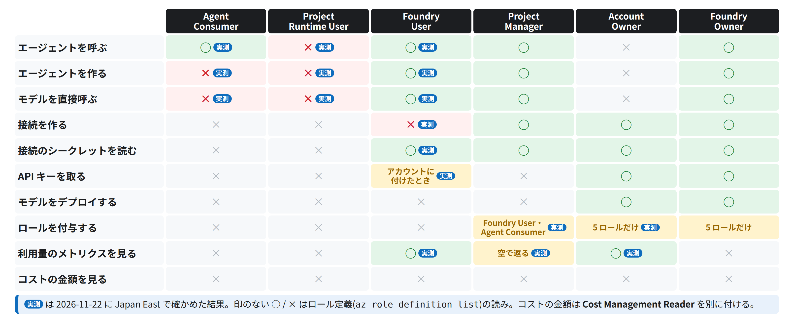
- 利用者にエージェントを使わせるだけなら、Agent Consumer をエージェント単位で付ける。呼べるのはエージェントのエンドポイントだけになる。
- Project Runtime User は、定義上は Responses を呼べるように見えるが、実測ではどの経路も 403 だった。実行専用の ID には使わない。
- 「モデルだけを呼べる」組み込みロールはない。Foundry User を付けるとエージェントも作れる。
- コストの金額はどの Foundry ロールでも見えない。Cost Management Reader を別に付ける。Project Manager では利用量のメトリクスもエラーにならずに空で返る。
5.6 プロジェクトの中で分けられないもの
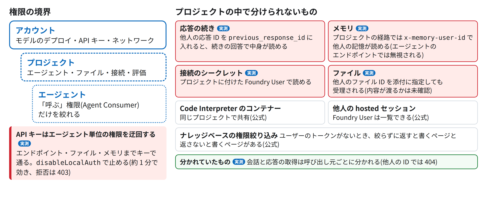
- 1 つのプロジェクトを複数の部署や顧客で共有すると、応答の続き・メモリ・接続のシークレットを通じて他人のデータに届く。分けたい単位ごとにプロジェクトを分け、利用者には Agent Consumer だけを付けてエンドポイント経由で使わせる(エンドポイントでは
x-memory-user-idが無視された)。 - 応答 ID を利用者のブラウザーに渡す設計では、ID が漏れると他人の会話の続きが読める。応答 ID はサーバー側で利用者に紐づけて検証する。
- API キーはエージェント単位の権限を迂回する。本番では
disableLocalAuthを有効にする。反映は約 1 分で、拒否は 401 ではなく 403AuthenticationTypeDisabledになった。
5.7 公式の記述と実測が食い違った点
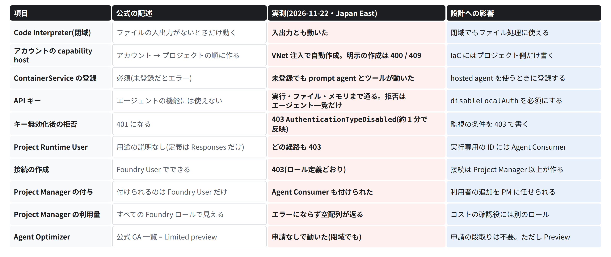
5.8 Agent Optimizer は申請なしで使えた
公式 GA 一覧は Agent Optimizer を「Limited preview」と書くが、Agent Optimizer の概要とクイックスタートには申請の手順がない。2026-11-22 に Japan East で、機能の登録やプレビューの申請をせずに API を呼んだ結果は次のとおり。
| 確かめたこと | 結果 |
|---|---|
| 費用の見積もり(ジョブを作らない) | 200。データ 3 行・候補 1 つで見積もりの上限は 0.55 USD |
| 最小のジョブ(prompt agent、データ 3 行、候補 1 つ) | 約 2 分で完了。評価のスコアは 0.833 から 0.917 に上がった。実費は数円 |
| 閉域のプロジェクト | 見積もり・ジョブとも成功(ジョブは約 3.6 分) |
申請の段取りは要らないが、GA ではないので Preview の条件(SLA なし)は変わらない。候補はエージェントの下書きの版として作られ、評価のためにエージェントが実際に呼ばれる。本番の系に書き込むツールを持つエージェントは、検証用の資源に向けてから流す。
5.9 実施しなかった検証と費用
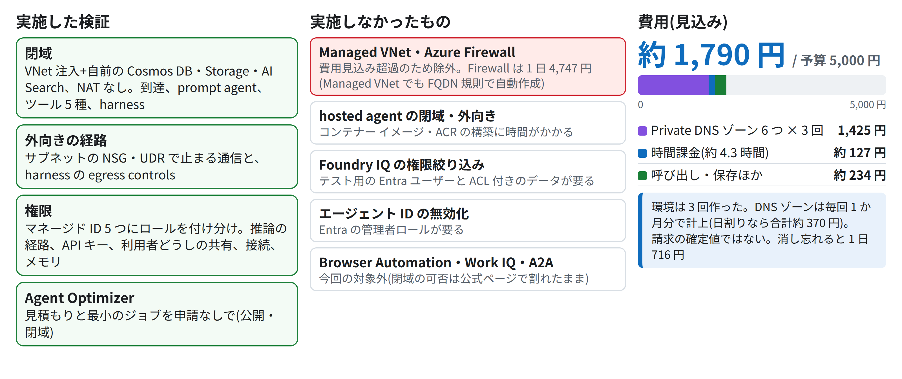
| 実施しなかったもの | 理由 | 実施した場合の概算 |
|---|---|---|
| Managed VNet | 費用見込み超過のため除外。 FQDN 規則を足すと Azure Firewall Standard が自動で作られ、SKU を後から変えられない | 197.8 円/時(1 日 4,747 円) |
| hosted agent の閉域(閉域でのビルド・プライベート ACR・外向きの通信) | コンテナー イメージと ACR の構築に時間がかかるため | 0.5 vCPU・1 GiB で約 10.7 円/時+ACR Standard 105.5 円/日 |
| 0.0.0.0/0 を Azure Firewall に向けた構成 | 費用見込み超過のため除外 | 197.8 円/時 |
| egress controls を付けたときの VNet 内・22 番の拒否の切り分け | 外向きの経路を確かめる目的の外(付随して見つかった) | トークン代のみ(数円) |
| Foundry IQ の権限絞り込み | テスト用の Entra ユーザーと ACL 付きのデータソースが要るため | — |
| エージェント ID の無効化 | Entra の管理者ロールが要るため | — |
| Browser Automation・Work IQ・A2A の閉域 | 今回の対象外 | — |
| Bastion・NAT Gateway | 要らなかったため(VM の操作は run-command で済み、NAT なしで全項目が成立した) | 30.06 円/時・約 7 円/時 |
費用は予算 5,000 円に対して約 1,790 円の見込み(環境を 3 回作った)。うち 1,425 円は Private DNS ゾーン 6 つを 3 回とも 1 か月分で計上した額で、日割りなら合計は約 370 円になる。時間課金のリソース(AI Search Basic・プライベートエンドポイント・VM)は毎回テストの後すぐに削除し、稼働は合わせて約 4.3 時間だった。消し忘れると 1 日 716 円かかる構成だった。
6. SI への影響と期限
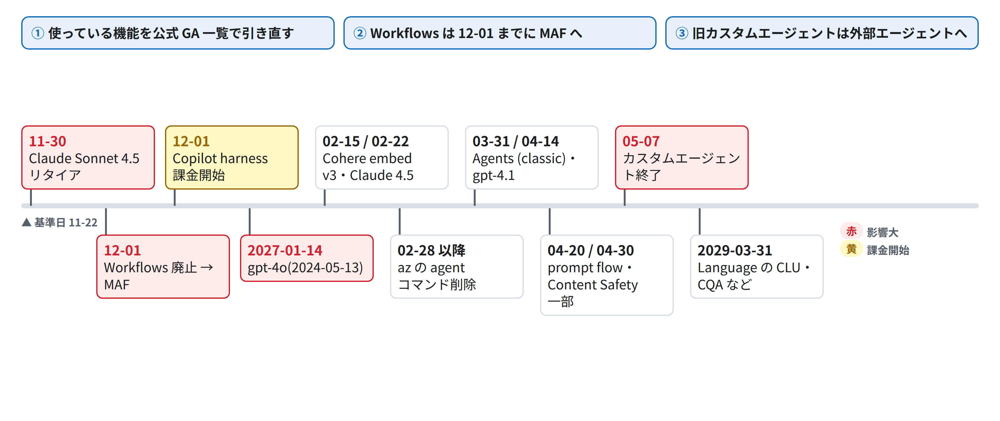
| 観点 | 判断が変わる点 |
|---|---|
| データ所在(日本) | GPT-6.1 / 6.2・Decision-1.1 は Japan East の Data Zone で使える。ただし 2026-11-01 以降に提供開始したモデル(GPT-6.2 など)は Modified Abuse Monitoring の対象外になる。managed compute・Policy 系のプレビュー・安全ルーブリックは日本で使えない |
| 閉域 | サブネット IP 共有が GA。egress 制御は発表では GA だが公式 GA 一覧に記載なし。voice の電話チャネルは閉域で使えない。M365 / Teams 公開の受信は公衆インターネット経由。エージェントのサブネットに NAT がなくても OpenAPI・MCP・Copilot harness は公開インターネットに出る。NSG・UDR を当てれば止まる(実測)。添付ファイルは閉域で失敗する(実測)。Browser Automation の閉域可否は要確認 |
| 課金 | Copilot harness は 12-01 から課金。プロンプトキャッシュの書き込みが課金対象に。cost controls は上限保証にならない |
| 権限 | 利用者には Agent Consumer だけを付け、分けたい単位ごとにプロジェクトを分ける。API キーは disableLocalAuth で止める。コストの閲覧に Cost Management Reader。ナレッジベースはユーザーのトークンを渡す設計にする |
| 期限 | Workflows(12-01)、gpt-4o 2024-05-13(2027-01-14)、カスタムエージェント(2027-05-07)、Language の CLU / CQA など(2029-03-31) |
7. 発表と公式ドキュメントが食い違う機能
| 機能 | GA など強い表記の出典 | 公式 GA 一覧・食い違う出典 |
|---|---|---|
| voice agents | Learn・SDK・ブログ = GA | 公式 GA 一覧「Agents — Voice Live」= Preview |
| Insights | ブログ・Book of News・SDK = GA | 公式 GA 一覧に記載なし |
| hosted agent の egress 制御 | Learn・devblogs = GA | 公式 GA 一覧に記載なし(Guardrails — Agents = Preview) |
| Agent optimizer | Book of News = GA | 公式 GA 一覧 = Limited preview(実測では申請なしで使えた。5.8) |
| Browser Automation・Computer Use | Learn 本文・TOC = GA | 公式 GA 一覧に記載なし(移行表 = preview) |
| 継続評価・Agent Monitoring Dashboard | Learn = ラベルなし | 公式 GA 一覧「Monitoring」= Preview |
| multi-turn evaluation | Book of News = GA | Learn = preview |
| Azure AI Gateway | Learn・Tech Community = GA | 公式 GA 一覧「AI Gateway」= Preview |
| Foundry IQ Serverless | Search の Learn = GA | Azure ブログ = 2026-12 に GA |
| Work IQ | Learn = 標準 MCP 経路は GA | ブログ = preview |
| Model router のプール | Book of News = 上位 50 モデル | Learn = 45 モデル |
| Microsoft Copilot SDK 2.0 | Book of News = GA | PyPI の分類 = Alpha |
詳細と出典は features 調査の「注意」欄 にある。
出典
- Ignite 2026 Book of News、Microsoft Source(2026-11-17)
- Azure ブログ: Continuous improvement comes to Microsoft Foundry、Introducing the new Microsoft IQ、What's new in Azure at Ignite 2026
- devblogs Foundry: What's new in Foundry Agent Service at Ignite 2026、Hosted agents at Ignite 2026、Tools and Toolboxes、Managed Compute GA、Dev Pack
- Official Microsoft Blog: Introducing the Microsoft Copilot harness(2026-10-28)
- Microsoft Learn: Feature readiness at GA、Model retirement schedule ほか各表の出典欄
- Copilot Studio: Build and manage business processes with Microsoft Copilot Studio(2026-11-18)、Copilot at Microsoft Ignite(2026-11-17)、What's new in Copilot Studio
- 本リポジトリ: features 調査(2026-11-22 更新)
- 本リポジトリの実測: labs/foundry-probes の probe 12〜15(閉域・権限・Agent Optimizer・外向きの経路、2026-11-22、Japan East)